Fly Like a Bird...
Explore the Soul of India
Experience the divine beauty of India's Sacred Temples.Discover India's Sacred Temples, Heritage & Timeless Traditions

Experience the divine beauty of India's Sacred Temples.Discover India's Sacred Temples, Heritage & Timeless Traditions


📍 Location: Tirupati, Andhra Pradesh
Tirumala Venkateswara Temple is one of the world's most visited
Hindu temples. Dedicated to Lord Venkateswara,it attracts millions of devotees every year. Its peaceful surroundings and magnificent architecture make it a must-visit destination for travelers and pilgrims alike.

📍 Location: Madurai, Tamil Nadu
Famous for its colorful towers and intricate sculptures, this temple is dedicated to Goddess Meenakshi. It is one of the finest examples of Dravidian architecture. The temple beautifully showcases South India's rich culture, history, and artistic heritage.

📍 Location: Puri, Odisha
Known worldwide for the grand Rath Yatra festival, this temple is dedicated to Lord Jagannath. Its magnificent architecture and religious importance attract visitors from across the globe. It is one of India's most sacred pilgrimage destinations.

📍 Location: Varanasi, Uttar Pradesh
One of the holiest temples dedicated to Lord Shiva, Kashi Vishwanath is located in the sacred city of Varanasi. It is one of the twelve Jyotirlingas and is visited by millions of devotees. The nearby Ganga River adds to its spiritual significance.

📍 Location: Rudraprayag District, Uttarakhand
Surrounded by the majestic Himalayan mountains, Kedarnath Temple is one of the holiest shrines of Lord Shiva. It is part of the Char Dham pilgrimage and offers breathtaking natural beauty. The journey to the temple is as memorable as the destination itself.

📍 Location: Agra, Uttar Pradesh
Description:
The Taj Mahal is a magnificent white marble mausoleum built by Emperor Shah Jahan in memory of his wife Mumtaz Mahal. It is a UNESCO World Heritage Site and one of the New Seven Wonders of the World.

📍 Location: Vijayanagara District, Karnataka
Description:
Hampi was the capital of the Vijayanagara Empire and is famous for its ancient temples, stone chariots, and impressive ruins. It is a UNESCO World Heritage Site that showcases India's rich architectural heritage.

📍 Location: Konark, Odisha
Description:
Built in the 13th century, the Konark Sun Temple is designed as a giant stone chariot dedicated to the Sun God. Its intricate carvings and remarkable architecture attract visitors from around the world.

📍 Location: Aurangabad District, Maharashtra
Description:
The Ajanta Caves are a group of ancient Buddhist rock-cut caves known for their beautiful murals and sculptures. They provide a glimpse into India's rich artistic and spiritual history.

📍 Location: Aurangabad District, Maharashtra
Description:
The Ellora Caves feature magnificent rock-cut temples representing Hinduism, Buddhism, and Jainism. The famous Kailasa Temple, carved from a single rock, is considered an engineering and architectural masterpiece.
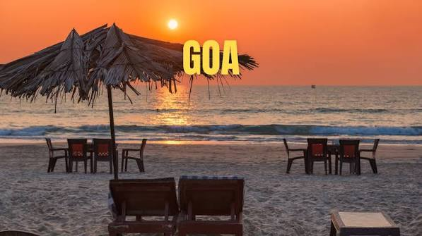
📍 Location: Goa
Goa is famous for its golden sandy beaches, water sports,
nightlife, seafood, and Portuguese heritage. It is one of India's
most popular tourist destinations.
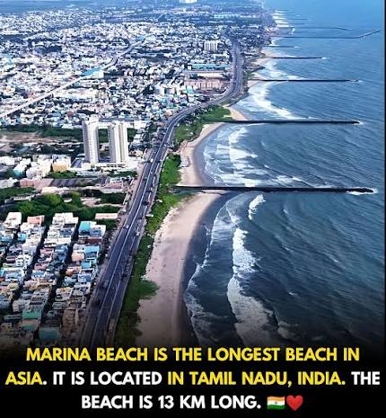
📍 Location: Chennai
Marina Beach in Chennai is one of the longest urban beaches in the world. It is famous for its golden sands, beautiful sunrise views, lively atmosphere, and delicious street food.
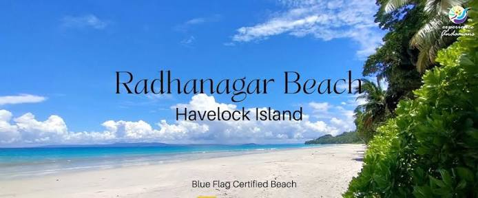
📍 Location: Andaman and Nicobars Island
Radhanagar Beach, located on Havelock Island in the Andaman and Nicobar Islands, is known for its crystal-clear waters and white sandy shore. It is an ideal destination for swimming, relaxing, and watching spectacular sunsets.
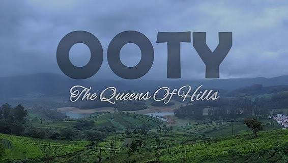
📍 Location: TamilNadu
Ooty, the "Queen of Hill Stations," is nestled in the Nilgiri Hills of Tamil Nadu. It is renowned for its tea plantations, botanical gardens, scenic lakes, and pleasant climate throughout the year.
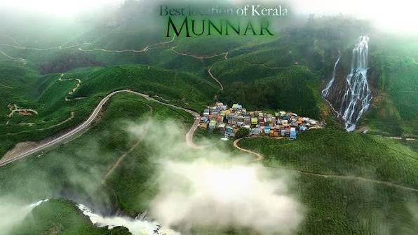
📍 Location: Kerala
Munnar, located in Kerala, is known for its endless tea plantations, mist-covered hills, and breathtaking landscapes. It is a favorite destination for nature lovers, trekkers, and honeymooners.
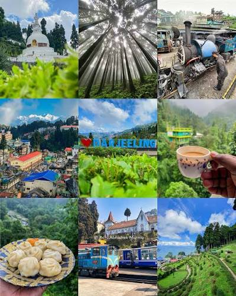
📍 Location: WestBengal
Darjeeling is a charming hill station in West Bengal, famous for its world-renowned tea gardens and panoramic Himalayan views. The Darjeeling Himalayan Railway, a UNESCO World Heritage Site, is one of its major attractions.
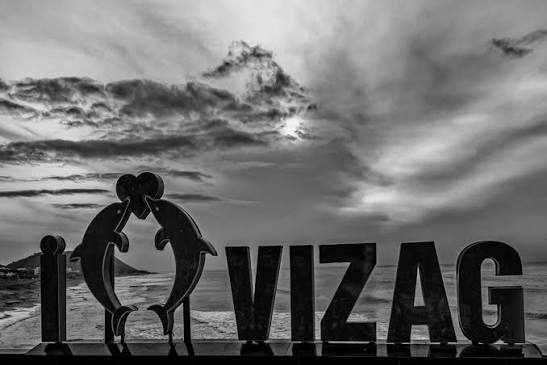
📍 Location: Andhra Pradesh
Visakhapatnam, popularly known as Vizag, is a beautiful coastal city in Andhra Pradesh. It is famous for RK Beach, Kailasagiri, INS Kurusura Submarine Museum, and the nearby Araku Valley.
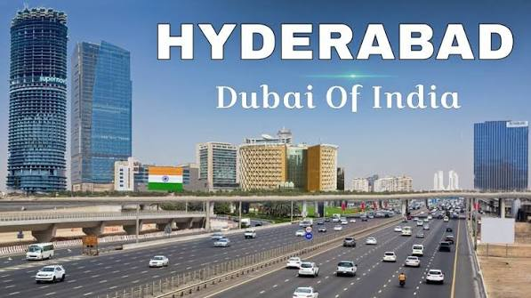
📍 Location: Telangana
Hyderabad, the City of Pearls, is renowned for its rich heritage, delicious Hyderabadi Biryani, and iconic Charminar. It is also a major IT hub with attractions like Golconda Fort and Ramoji Film City.
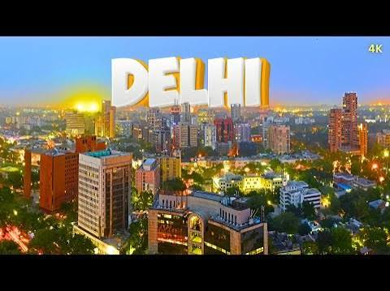
📍 Location: NewDelhi
Delhi, the capital of India, blends rich history with modern urban life. It is home to iconic landmarks such as the Red Fort, India Gate, Qutub Minar, and bustling markets like Chandni Chowk.
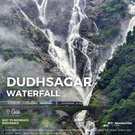
📍 Location: Goa
Dudhsagar Falls in Goa is one of India's tallest waterfalls, cascading from a height of over 300 meters. Surrounded by the lush Western Ghats, it offers a spectacular view, especially during the monsoon season.
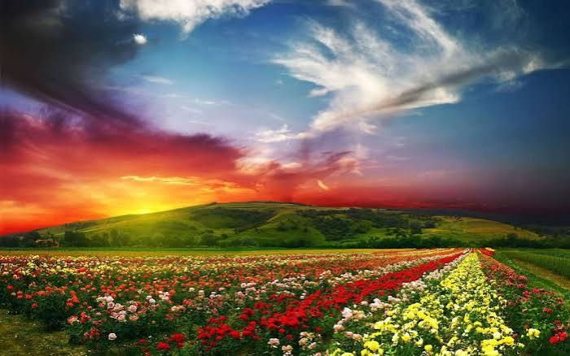
📍 Location: Uttarakhand
The Valley of Flowers in Uttarakhand is a UNESCO World Heritage Site known for its vibrant alpine flowers and breathtaking Himalayan scenery. During the blooming season, the valley transforms into a colorful natural paradise.
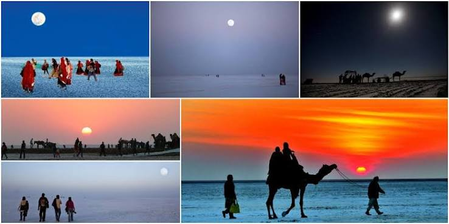
📍 Location: Gujarat
The Rann of Kutch in Gujarat is the world's largest salt desert, famous for its vast white landscape. During the Rann Utsav, the region comes alive with cultural performances, handicrafts, and traditional cuisine.

Explore Bharat is your gateway to India's incredible beauty, rich heritage, spiritual destinations, breathtaking landscapes, and vibrant culture. Whether you're planning a pilgrimage, an adventure trip, or a family vacation, Explore Bharat helps you discover the best places across the country.
Explore Bharat not only showcases India's spiritual, historical, and natural attractions but also helps travelers discover useful information to plan memorable journeys across the country.
Experience India's timeless beauty, rich culture, and unforgettable journeys.
Discover magnificent monuments, UNESCO World Heritage Sites, and centuries of Indian history.
From snowy mountains to golden beaches, India offers something for every traveler.
Explore breathtaking landscapes and capture unforgettable memories.
Find famous destinations quickly with simple navigation and organized categories.
Whether you love spirituality,history, nature, or adventure,Explore Bharat has something for you.
Celebrate India's traditions,natural beauty, festivals and vibrant culture.
Have questions or travel suggestions? We'd love to hear from you.Reach out and let's make your journey across India even more memorable.